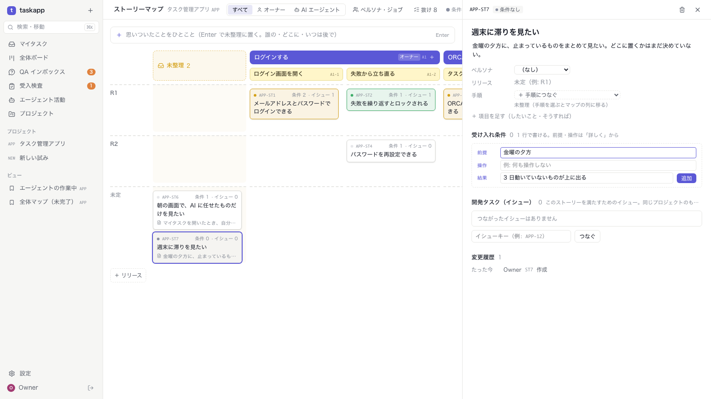
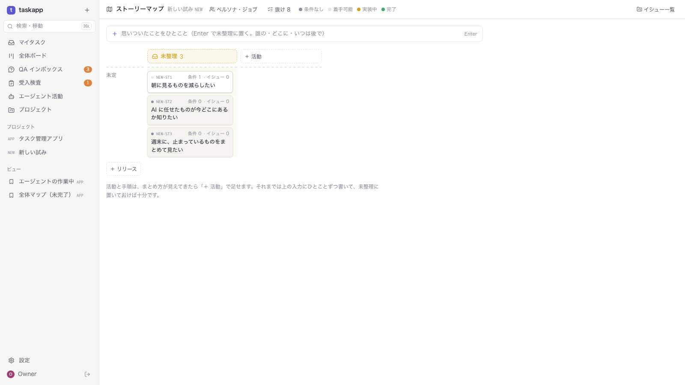
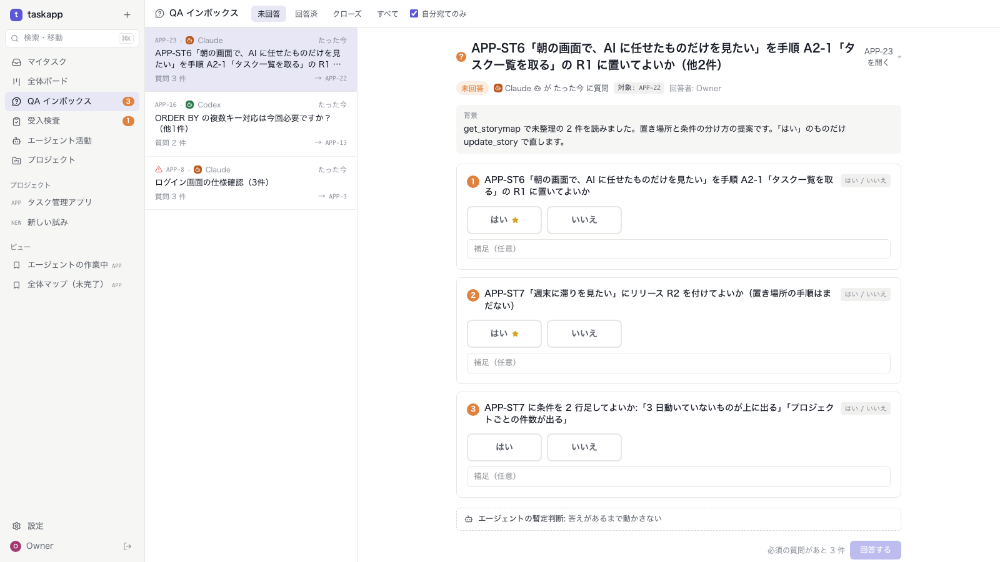

REQUIREMENTS · OPTION D IMPLEMENTED
案 D 実装
M1 をゆるく使う
テーブルは M1 のまま、列を 1 つ足しただけ。
書くときの決まりと画面をゆるめ、整理は後から AI と
ブランチ exp/req-d · task-app-next/d-loose
2026-11-02 · 確認待ち
01 · まとめ
DB は 1 列、画面は 3 か所、MCP に 2 つの道具
DB（マイグレーション 010）
req_stories.body を 1 列足しただけ。ほかの 10 テーブルは M1 のまま
UI
S15 にひとこと入力と未整理の列。S16 に本文と1 行の条件。ペルソナ・活動は使うときだけ
MCP
create_story・update_story。AI は get_storymap で読み、ask_question で聞き、はいだけ直す
| テスト | 件数 | 増えた分 |
|---|---|---|
| API テスト（言語非依存） | 206 件すべて成功 | +5（storymap-loose.test.ts） |
| 画面テスト（Playwright） | 41 件すべて成功 | +3（storymap-loose.spec.ts）。M1 の 4 件は手順を合わせて直した |
| Go の単体テスト | すべて成功 | — |
2 / 11
02 · 何を変えたか
固さ K3・K4・K6 を、書く人から見えなくした
| # | M1（前） | 案 D（後） | 固さ |
|---|---|---|---|
| D1 | ストーリーはセルの ＋ から。先に活動と手順が要る | マップの上のひとこと入力。Enter で未整理の列へ | K3・K6 |
| D2 | したいこと・そうすれば の欄が並ぶ | 本文（Markdown）。欄は入っているとき・「項目を足す」で | K6 |
| D3 | 前提・操作・結果の 3 欄を書く | 1 行（☐ 結果）。前提・操作は「詳しく」 | K4 |
| D4 | ペルソナの絞り込み・抜けの警告が常に出る | 使うときだけ。活動 0 件ならリリース × 未整理。抜けは数だけ | K3・K5 |
| D5 | AI はマップを読めるだけ | AI が聞いてから直す（create_story・update_story） | K6 |
3 / 11
03 · D1 ひとこと入力と未整理の列
思いついたら 1 行。置き場所は後で決める
前（M1）
後（案 D）
M1 でマップの下にあった「手順につながっていないストーリー」を、最初の列「未整理」に移した。リリースのない行は「未定」。カードには本文の 1 行目が出る
4 / 11
04 · D2 本文
タイトルと本文だけで書ける。欄は必要になったら
前（M1）
後（案 D）
タイトルの下に本文（クリックで編集、Markdown で表示）。「したいこと」「そうすれば」は空なら隠れ、「項目を足す」で出る。手順がなければ「未整理」と表示
5 / 11
05 · D3 受け入れ条件は 1 行
「こうなっていればいい」を 1 行。詳しく書きたいときだけ 3 欄

1
1 行
☐ の入力に結果だけを書いて追加。DB は M1 のまま（前提・操作は空）
2
詳しく
押すと前提・操作の欄が出る（写真は開いたところ）
3
イシューへ写す
1 行の条件は 1 行のまま写る。3 欄のものは【前提】【操作】【結果】
6 / 11
06 · D4 使うときだけ
活動もペルソナもないプロジェクトは、リリース × 未整理だけ

1
ペルソナ
0 件なら絞り込みを出さない。S16 のペルソナ欄も出さない
2
活動と手順
0 件ならマップは未整理の列だけ。「＋ 活動」と短い説明
3
抜け
警告の色をやめて数だけ。開けば一覧
7 / 11
07 · D5 AI が整える
AI は聞いてから直す。オーナーは「はい / いいえ」で答えるだけ

1
読む
get_storymap で未整理と抜けを読む
2
聞く
置き場所・リリース・条件の分け方を ask_question（yes/no）で。質問は整理用のタスクに付ける
3
直す
「はい」のものだけ update_story。履歴には AI の名前が残る
8 / 11
08 · S09 イシュー詳細
イシューの「なぜ」に本文も出る

1
満たすストーリー
タイトル・本文・したいこと・条件
2
条件から写す
1 行の条件はそのまま 1 行で
3
AI にも同じ
MCP の get_issue の stories に body
9 / 11
09 · DB・API・MCP の変更点
テーブルは M1 のまま。足したのは本文の列と、AI の道具 2 つ
| どこ | 変更 |
|---|---|
| req_stories | body TEXT NOT NULL DEFAULT ''（マイグレーション 010） |
| API | Story・StoryRef・StoryInput・StoryPatch に body。変更履歴にも残る。ほかの操作は M1 のまま |
| MCP create_story | project・title だけで作れる。body・release・step_keys・criteria（then だけでよい）は任意 |
| MCP update_story | title・body・persona_key・i_want・so_that・release・step_keys（[] で未整理に戻す）・add_criteria・update_criteria |
| MCP の説明 | 「get_storymap で読み、ask_question（yes_no）で聞き、承認されたものだけ update_story」。サーバーは AI を呼ばない |
| demo データ | ST6・ST7 を未整理で追加（本文あり、ST6 は 1 行の条件つき） |
10 / 11
10 · 制限と確認したいこと
置き場所はまだドラッグできない
1
置き場所
S16 の「手順につなぐ」とリリースの欄で決める。ドラッグはまだ
2
抜けの数
未整理が多いと大きくなる（3 件で 8）。未整理を抜けから外すかは未定
3
M1 の制限
ペルソナで絞ると、活動と別のペルソナのストーリーが消える（そのまま）
1. 形
未整理の列・本文・1 行の条件・使うときだけ、でよいか
2. D5 を試す
AI が聞いて、はいだけ直す流れを本番の TAPP で試してよいか
11 / 11